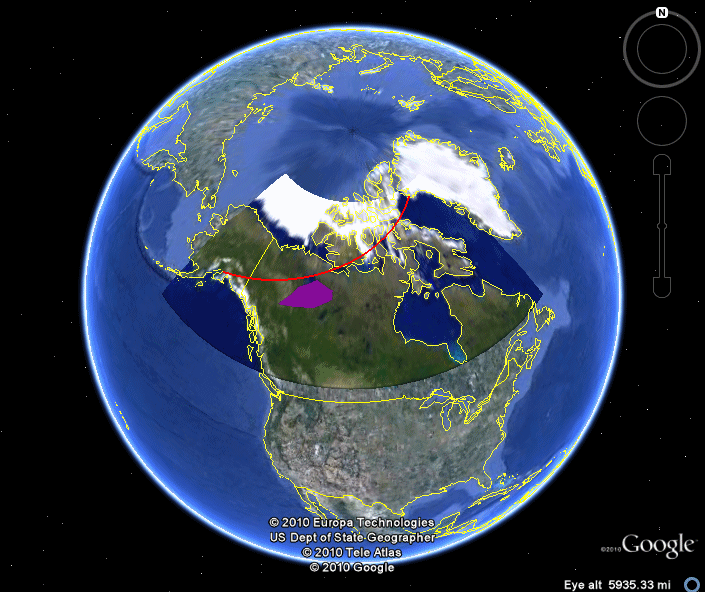
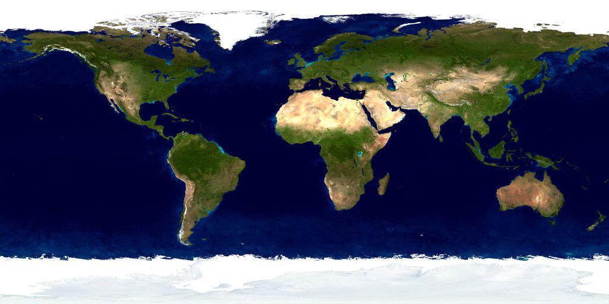
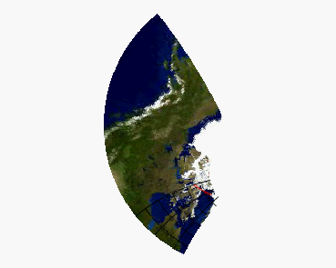
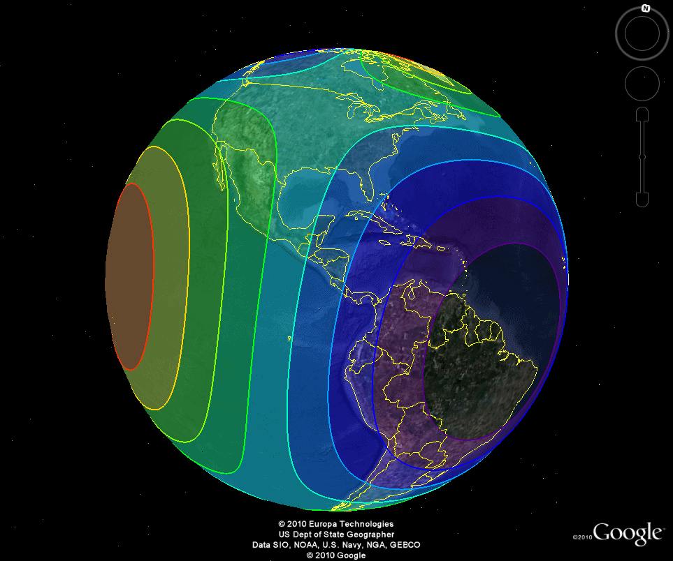

If you create an Image graphic by projecting a graphic file onto a map, you can convert the IDL graphic into other graphic types, including the Open Geospatial Consortium's Keyhole Markup Language (KML). KML is an XML-based schema that visualizes geographic data and annotations on Internet-based two-dimensional maps and three-dimensional Earth browsers (including the Google Earth™ mapping service).
This topic shows how to use a graphic's Save method to convert an Image graphic to a KML file.
In this example we project a portion of a JPG image of the world onto a globe, and add a line showing a research airplane's flight path between Thule Air Force Base in Greenland and Alaska's Elmendorf Air Force Base. We also add a polygon to the Image graphic showing the magnetic anomaly detected during the flight. Finally, we save this Image graphic with the added annotations to a KML file and load the file into the Google Earth™ mapping service.

This code creates a KML file that, when loaded into the Google Earth™ mapping service, creates the image shown above. You can copy the entire block and paste it into the IDL command line to run it.
; Determine the path to Day.jpg in the IDL distribution
world = FILEPATH('Day.jpg', SUBDIRECTORY=['examples','data'])
; Create the arctic Image graphic.
arctic = IMAGE(world, LIMIT=[51, -161, 78, -52], $
GRID_UNITS=2, IMAGE_LOCATION=[-180,-90], $
IMAGE_DIMENSIONS=[360,180], MAP_PROJECTION='Stereographic', $
/CURRENT, NAME='Arctic Research')
; Add a polyline annotation to the graphic connecting Thule
; to Elmendorf
polyline = POLYLINE([[-149.81,61.25],[-68.70,76.53]], $
/DATA, COLOR='red', NAME='Thule to Elmendorf', $
THICK=2, TARGET=arctic)
; Add the magnetic anomaly polygon
x = [-119.017, -124.82, -129.22, -118.23, -113.03, -113.183]
y = [66.25, 64.65, 61.43, 62.3, 63.783, 65.11]
polygon = POLYGON(x, y, /DATA, COLOR='purple', $
FILL_COLOR='purple', FILL_TRANSPARENCY=0, $
NAME='Magnetic Anomaly', TARGET=arctic)
; Save the Image graphic as a KML file
arctic.SAVE, 'arctic_map.kml'
In this example we start with the two-dimensional
Day.jpg
file (included in the IDL distribution):

; Determine the path to Day.jpg in the IDL distribution
world = FILEPATH('Day.jpg', SUBDIRECTORY=['examples','data'])
We then call the IMAGE function,which does the following things:
Day.jpg
using a stereographic projection
; Create the arctic Image graphic.
arctic = IMAGE(world, LIMIT=[51, -161, 78, -52], $
GRID_UNITS=2, IMAGE_LOCATION=[-180,-90], $
IMAGE_DIMENSIONS=[360,180], MAP_PROJECTION='Stereographic', $
/CURRENT, NAME='Arctic Research')
Next we add a polyline annotation representing the research airplane's flight path, and a polygon showing the magnetic anomaly detected on the flight:
; Add a polyline annotation to the graphic connecting Thule
; to Elmendorf
polyline = POLYLINE([[-149.81,61.25],[-68.70,76.53]], $
/DATA, COLOR='red', NAME='Thule to Elmendorf', $
THICK=2, TARGET=arctic)
; Add the magnetic anomaly polygon
x = [-119.017, -124.82, -129.22, -118.23, -113.03, -113.183]
y = [66.25, 64.65, 61.43, 62.3, 63.783, 65.11]
polygon = POLYGON(x, y, /DATA, COLOR='purple', $
FILL_COLOR='purple', FILL_TRANSPARENCY=0, $
NAME='Magnetic Anomaly', TARGET=arctic)
The resulting Image graphic shows the polygon section of the globe projected stereographically:

Finally, we save the Image graphic as a KML file using the Image object's Save method and load the file into the Google Earth™ mapping service, where it is superimposed upon a globe.

In this example we create a map of the world using the Mollweide projection, and overplot that map with two 3-D contour plots (one that displays filled contour levels with different colors, and one that just shows the contour boundaries). We then use the CONTOUR function's SAVE method to create a KML file and load the file into the Google Earth™ mapping service.
This code creates a KML file that creates the image shown above. You can copy the entire block and paste it into the IDL command line to run it.
; Create the contour data
; x-coordinates of the Z data (-180 to 180)
longitude = FINDGEN(360) - 180
; y-coordinates of the Z data (-90 to 90)
latitude = FINDGEN(180) - 90
; A 2-D array containing the contour data
cntrdata = SIN(longitude/30) # COS(latitude/30)
; Create a map graphic as a canvas for the contour plot
worldmap= MAP('Mollweide', LIMIT=[-90,-180,90,180])
; Overplot a ten-level contour plot, where each contour level is
; filled with a color. The levels are 50% opaque and the colors
; are taken from the Rainbow color table
cntr1 = CONTOUR(cntrdata, longitude, latitude, $
GRID_UNITS=2, N_LEVELS=10, RGB_TABLE=13, /OVERPLOT, $
/FILL, TRANSPARENCY=50)
; Overplot another contour plot, this time displaying only
; contour boundaries. These boundaries are two points thick
; and are colored with the Rainbow + White color table
cntr2 = CONTOUR(cntrdata, longitude, latitude, $
GRID_UNITS=2, N_LEVELS=10, RGB_TABLE=39, $
/OVERPLOT, C_THICK=[2])
; Save the graphic as a KML file
worldmap.SAVE, 'contour_map.kml'
At this point you can load
contour_map.kml
into the Google Earth™ mapping service, and the map and overplotted contour plots are projected on a globe.